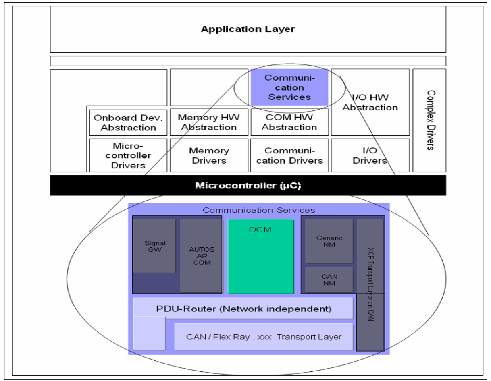
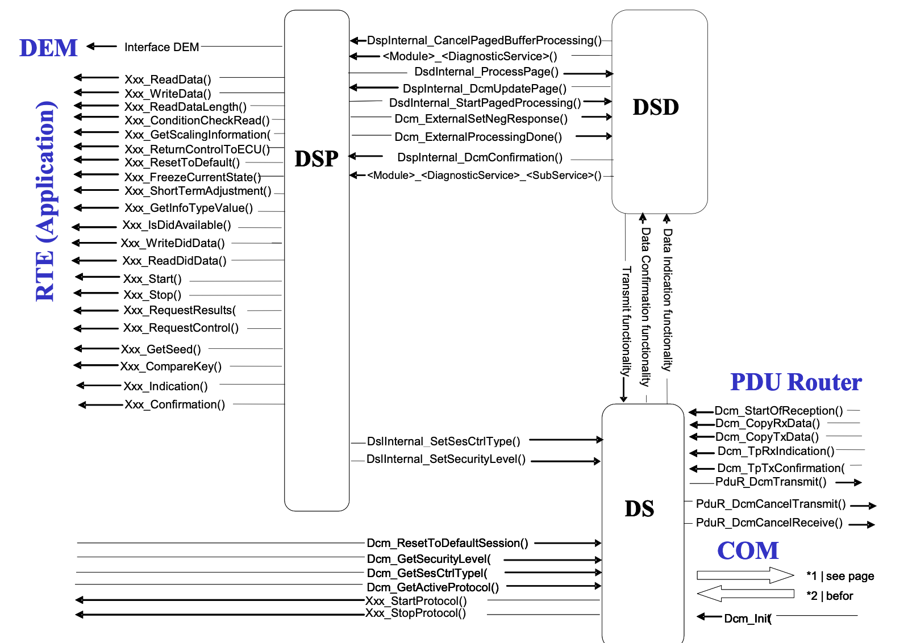

1 Description:
Diagnostic session control module ensures diagnostic data flow and manages the diagnostic states, especially diagnostic sessions and security states .
The DCM module provides the OSI-layers 5 to 7
OSI Layers and Diagnostic Protocols linking
- 7-
UDS 14229 - 6-
- 5-
ISO 15765-3- UDS on CAN - 4-
ISO 15765-2 - 3-
ISO 15765-2 - 2-
CAN procotol,LIN Protocol,Flexray,MOST - 1-
CAN procotol,LIN Protocol,Flexray,MOST
- 7-
The
dcmmodule receives diagnostic messages from thepdurmodule . once the dcm gets all the data it sends a message back throught hePduRmodulePdur (protocol data unit router) : The PduR module provides functions to trasmit and receive diagnositc data
Communication Manager(ComM): The ComM module provides functions such that the dcm can indicate the states “active” and “inactive” for diagnostic communication
DCM handles the communication requirements such as Full/Silent/No-Communication. dcm module provides the functionality to enable and disable diagnositc communication if requested by the ComM module.
DCM indicates to the BswM a communication mode change and notifies if the dcm is initailised due to jump from bootloader to application
1.1 NRC(Negative response code)
If the diagnostic service is not sucesful due to any reason the corresponding NRC will be set and sent along with response to the diagnostic request
1.2 DCM Submodules
- DCM is devided in to 3 parts
- DSL-Diagnostic Session Layer
- controls diagnostic protocol timing and manages the security and sessions
- Diagnostic Service Dispatcher
- receives new diagnositc request over a network and forwards it to a data processor
- Transmits a diagnositc response over a netowork when triggered by the data processor(DSP)
- Diagnostic Service Processing
- The DSP submodule handles the actual diagnostic service requests . 
1.2.1 DSL
1.2.2 Use cases
- Sessions handling as required by ISO 14229 and ISO 15765-3
- Application layer timing handling as required by ISO 14229 and ISO 15765-3
- Specific response behabiors as required by iso 14229 and iso 15765-3
1.2.3 Interactions with other modules
The DSL has the following interaction wwith other modules : ##### PduR Module : - PduR module provides data of incoming diagnostic requests - The DSL submodule triggers output of diagnostic responses ##### DSD Submodule : - The DSL informs the dsd about incoming requests and provides the data - the DSD submodule triggers output of diagnostic responses ##### DSP submodule : - The DSL provides access to security and session state ##### ComM module : - The DSL guarantees the communication behavior required by the ComM module
1.2.4 DSL important Functionalities
1.2.4.1 Request handling
- Forwards request from the PduR module to DSD
- Concurrent test present (Keep alive logic - 3E service from ISO 14229) - if the 3E service requested with suppressPosRspMsgIndication bit set to be true (subfunction 0x80) ,DSL reset S3 server timing. also it shall not forward this request to DSD fof further interpretation
1.2.4.2 Response Handling :
Forwards responses from the dsd to the PduR - via api PduR_DcmTransmit
Guarantee response timing to tester if the service takes more time to respond then DSL shall send NRC 0x78 when reaching the response time P2 server max(
DcmDspSessionP2ServerMax) from the next 0x78 waits for P2* server timeDcmDspSessionP2StarServerMax. DSL sends the negative responses as required from a separate buffer. The Max number of response pending(0x78) is configurable usingDcmDslDiagRespMaxNumRespPendin order to avoid the deadlocks in the application. Once it reaches the Resp pending counter it shall send NRC (0x10) indicating general reject.
1.2.4.3 Security level handling
- Manage security level
1.2.4.4 Session state handling
Manage session state :DSL get the current active session via
Dcm_GetSesCtrlType()and set a new session throughDslInternal_SetSesCtrlType()During dcm initialisation the default state is et which isDefault session(0x01) when ever a non deault session is active and when the session timeout(S3 server)timing reaches without receiving any diag request , the DSL shall reset to the deault session by calling mode switch api of mode switch interfaceKeep track of active nond efault sessions
Allow modifying timings DCM mdoule handle the following protocol timing parameter
P2ServerMin,P2ServerMax,P2*ServerMin,P2*ServerMax,S3ServerGenerally these parameter set as
1.2.4.5 Communication mode handling
- Handling of Full/Silent/No Communication
- Indicating of active/inactive diagnostic
- Enabling/Disabling all kinds of diagnostic transmissions
1.3 DSD-Diagnostic Service dispatcher
It checks the validity of an incoming diagnostic request such as - Verification of diagnostic session - Security access levels - Application permission And keeps track of the progress of a service request execution
The DSD shall process only valid requests and shall reject invalid ones
1.3.1 Use cases
Receive a request message and transmit positive response message
- The
DSDensures the validity of the request message.In this case if the request is valid the response will be positive .The request will be forwarded to the data process in theDSP. afterDSPcompletes it triggers the transmission of response message by theDSD. If the response processing takes more time by theDSPmay be waiting for read/write operation to eeprom then the response pending is covered by theDSL. When the request diag received the correspondingDcmPduIdis blocked by the DSL .During the processing of this request , no other request of the same protocol type can be received, until the corresponding response message is sent and theDcmPduIdif released again
- The
Receive a request message and supress the positive response
- If the suppress positive response bit is set in the diag request in msb bit of sub function parameter .this kind of message completely handled by the DSD
Receieve a request message and suppress the negative response
- In case of
functional addressingthe DSD shall suppress the negative response for NRC 0x11 , 0x12 and 0x31
- In case of
Receive a request messahe and trasmit the negative response message
- Diag request is not valid or any condition not met to send the positive response the negative responses will be sent . In this case the DSP trigger a negative response with nrc indicating why the request was rejected . In case of 0x22 service if more than one did read operation is requested and if not all of the requested read did not failed only for the passed did the response will be sent .
Send a positive response message without corresponding request
- There are two services in the UDS protocol where multiole responses are sent for only one request . One service is used to enable(and disable)an event or time triggered transmission of another service , which is sent byt he ECU without a corresponding request.
These services are
- Read Data by periodic identifier(0x2A)
- Reponse on Event(0x86) These service handling is controlled by the DSL.However,DSD also provides the possibility to generate a response without a corresponding request.
- There are two services in the UDS protocol where multiole responses are sent for only one request . One service is used to enable(and disable)an event or time triggered transmission of another service , which is sent byt he ECU without a corresponding request.
Segemented responses(Paged buffer):
- Services such as 0x19 and 0x36 exchange huge amount of data. So in this case the ecu internal buffer must be large enough to keep the longest data message which is to be exchnaged and the complete buffer is filled before the transmission is started . In a more RAM memory saving approach the buffer is filled only partly , transmitted partly and then refilled partly and so on. This paging mechanism rewuires only a reduced amount of memory but demands a well defined reaction time for buffer refilling . The user can decide whether to use the linear buffer or paged bugger for diagnostic
#### DSD interaction with other modules
- Delegates the processing of request to the DSP
- Keeps track of request processing
- Transmit the response of the application to the DSL
#### Functional description
- The DSD shall be triggered by the DSL , if a new diagnostic message is recognised .
- The DSD will sart processing by analyzing the diagnostic service indentifier contained in the received diagnositc message
- if the newly received the diagnositc request sid is not supported then the DSD shall transmit the negative response with NRC 0x11 to the DSL.
Verification Functionality:The DSD accept service only if below 3 verifications are passedVerification of the Diagnostic session: On receiving the uds request dsd gets the current diagnostic session using api
Dcm_GetSesCtrlTypeand verify whether the requested service and sub function are allowed in the current diagnostic session or not . (Note :0x10 service handling not part of DSD) If the received diag service is not allowed in the current diag session the DSD transmit the negative response with NRC 0x7F (service not supported in the active session)to the DSL submodule. If the received diag service is allowed in the current diag session but the sub function is not allowed in the current diag session then the DSD transmit the negative response with NRC 0x7E (sub function not supported in the active session)to the DSL submodule.Verification of the service security access levels:
- The DSD checks the current security level with api
Dcm_GetSecurityLevel()If the received diag service is not allowed in the current security level then the DSD shall transmit negative response with NRC 0x33 (Security access denied) to the DSL submodule
If the received diag service is n allowed in the current security level but the requested sub function is not allowed then the DSD shall transmit negative response with NRC 0x33 (Security access denied) to the DSL submodule DSD checks whether subfunction supported , if not supported NRC 0x12 will be sent .
DSD checks minimum message length- The DSD checks the current security level with api
Verification of the application environment/Permission Before processing the diag request the application requested to check permission /environment eg: if ecu is in run state the diag service execution not allowed , vehicle speed is higher then the service is not allowed to execute(eg : service 11)
The DSD pass the diag request to DSP service interpretor
The execution of the DSP service interpreter can have the results
- Positive result or
- Negative result
Following possible responses can be assembled
Positive response :
DSPindicate callingDcm_ExternalProcessingDone().The parameterDcm_MsgContextTypecontains the diagnostic (response)messgae . Then theDSDadds theresponse SIDand then response data stream (returned by the application)in the parameterDcm_MsgContextTypeNegative response : The DSP triggers specific NRC to the DSD . The DSD handle all the supported NRC from the application and defined in the
Dcm_NegativeResponseCodeType.Suppression of response in case of a negative result of the execution and active functional addressing the dsd submodule shall activate the suppression of the following negative responses:
- NRC 0x011 - service not supported
- NRC 0x12 - subfunction not supported
- NRC 0x31 - request out of range
- no Response :
- Initiate transmission
- the DSD shall forward the diagnostic(response)message (positive or negative response) to the DSL.
- the DSL shall forward the diagnostic(response)message (positive or negative response)further to the PduR module by executing a DSL transmit functionality.
- The
DSLwill receive the confirmation by thePduRupon forwarding the dada- the
DSLshall forward the received confirmation from thePduRto thedsdsubmodule. - the
dsdshall forward the confirmation via the internal functionDspInternal_DcmConfirmation()to theDSPsubmodule. - In case no diagnostic(response)message shall be sent(suppression of responses)the DSL submodule shall not transmit any response.
- the
1.4 Diagnostic Service Processing-DSP
When dsd request the dsp to process the diag request .it executed following basic process 1. analyze the received request message 2. check format and whether the addressed subfunction is supported 3. aquire data or execute the required function call on the DEM, SW-Cs or other BSW modules 4. assemble the response
The DSP submodule will check for appropriate message length and structure before executing the requested command . the DSP triggers a negative response with NRC 0x13 when the analysis of the request message results in formatting or length failure.
if the paged-buffer mechanism is used the DSP submodule shall determine the overall response length before any data is passed to the DSD submodule respectively. The DSP submodule shall confirm the completion of the request processing with the function call Dcm_ExternalProcessingDone()